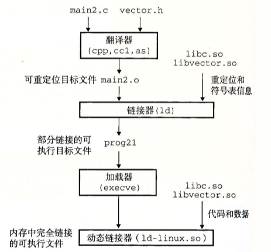

- 1 编译器驱动程序
- 2 静态链接
- 3 目标文件
- 4 可重定位目标文件
- 5 符号和符号表
- 6 符号解析
- 7 重定位
- 8 可执行目标文件
- 9 加载可执行目标文件
- 10 动态链接共享库
- 14 处理目标文件的工具
链接(Linking)是将各种代码和数据片段收集并组合成为一个单一文件的过程。链接可以在编译、加载、运行时执行。在现代系统中，链接由链接器(Linker)自动执行。
链接器使得分离编译(separate compilation)成为可能：
- 可以将源文件分解为更小、更好管理的模块，可以独立地修改和编译这些模块
- 修改一个模块后，只需重新编译它，并重新链接，不必编译其他文件
1 编译器驱动程序
编译器驱动程序(compiler driver)，代表用户在需要时调用预处理器(cpp)、编译器(ccl)、汇编器(as)和链接器(ld)。典型的编译器驱动程序，包括GNU GCC, Clang。
例如，一个简单打印hello的hello.c程序，经过下面四个阶段，生成可执行目标文件：
//file: hello.c
#include <stdio.h>
int main()
{
int i;
printf("Hello World");
}
linux > gcc -o hello hello.c

2 静态链接
静态链接器有两个主要任务：
- 符号解析(symbol resolution): 将每个符号 引用 正好和一个符号 定义 关联起来。
- 重定位(relocation): 把每个符号定义与一个内存位置关联起来，并修改所有对这些符号的引用，使得它们指向这个内存位置。
3 目标文件
目标文件有三种格式：可重定位目标文件(.o)，可执行目标文件(.out)，共享目标文件(.so)
- 可重定位目标文件(.o文件)。包含二进制代码和数据，其形式可以在编译时与其他可重定位目标文件合并起来，创建一个可执行目标文件。
- 可执行目标文件(a.out文件)。包含二进制代码和数据，其形式可以被直接复制到内存并执行。
- 共享目标文件(.so文件)。在加载或者运行时被动态地加载进内存并链接
各个系统的目标文件格式不同，Windows使用可移植可执行(Portable Executable, PE)格式。现代x86-64系统使用可执行可链接格式(Executable and Linkable Format, ELF)。
4 可重定位目标文件
以可执行可链接(ELF)格式为例，一个典型的可重定位目标文件包括以下几个节：
- ELF头和节头部表
.text已编译程序的机器代码.rodata只读数据.data已初始化的全局和静态C变量.bss未初始化的全局和静态C变量.symtab一个符号表.rel.text一个.text节中位置的列表.rel.data重定位信息.debug调试符号表.line原始程序行号和机器指令之间的映射.strtab字符串表

利用READELF程序可以显示程序hello.c生成的可执行可链接文件的信息：
gcc hello.c -c
readelf -a hello.o ## UNIX/LINUX
greadelf -a hello.o ## MAC, after brew install binutils
ELF Header:
Magic: 7f 45 4c 46 02 01 01 00 00 00 00 00 00 00 00 00
Class: ELF64
Data: 2's complement, little endian
Version: 1 (current)
OS/ABI: UNIX - System V
ABI Version: 0
Type: REL (Relocatable file)
Machine: Advanced Micro Devices X86-64
Version: 0x1
Entry point address: 0x0
Start of program headers: 0 (bytes into file)
Start of section headers: 304 (bytes into file)
Flags: 0x0
Size of this header: 64 (bytes)
Size of program headers: 0 (bytes)
Number of program headers: 0
Size of section headers: 64 (bytes)
Number of section headers: 13
Section header string table index: 10
Section Headers:
[Nr] Name Type Address Offset
Size EntSize Flags Link Info Align
[ 0] NULL 0000000000000000 00000000
0000000000000000 0000000000000000 0 0 0
[ 1] .text PROGBITS 0000000000000000 00000040
0000000000000015 0000000000000000 AX 0 0 1
[ 2] .rela.text RELA 0000000000000000 00000590
0000000000000030 0000000000000018 11 1 8
[ 3] .data PROGBITS 0000000000000000 00000055
0000000000000000 0000000000000000 WA 0 0 1
[ 4] .bss NOBITS 0000000000000000 00000055
0000000000000000 0000000000000000 WA 0 0 1
[ 5] .rodata PROGBITS 0000000000000000 00000055
000000000000000c 0000000000000000 A 0 0 1
[ 6] .comment PROGBITS 0000000000000000 00000061
000000000000002c 0000000000000001 MS 0 0 1
[ 7] .note.GNU-stack PROGBITS 0000000000000000 0000008d
0000000000000000 0000000000000000 0 0 1
[ 8] .eh_frame PROGBITS 0000000000000000 00000090
0000000000000038 0000000000000000 A 0 0 8
[ 9] .rela.eh_frame RELA 0000000000000000 000005c0
0000000000000018 0000000000000018 11 8 8
[10] .shstrtab STRTAB 0000000000000000 000000c8
0000000000000061 0000000000000000 0 0 1
[11] .symtab SYMTAB 0000000000000000 00000470
0000000000000108 0000000000000018 12 9 8
[12] .strtab STRTAB 0000000000000000 00000578
0000000000000015 0000000000000000 0 0 1
Key to Flags:
W (write), A (alloc), X (execute), M (merge), S (strings), l (large)
I (info), L (link order), G (group), T (TLS), E (exclude), x (unknown)
O (extra OS processing required) o (OS specific), p (processor specific)
There are no section groups in this file.
There are no program headers in this file.
Relocation section '.rela.text' at offset 0x590 contains 2 entries:
Offset Info Type Sym. Value Sym. Name + Addend
000000000005 00050000000a R_X86_64_32 0000000000000000 .rodata + 0
00000000000f 000a00000002 R_X86_64_PC32 0000000000000000 printf - 4
Relocation section '.rela.eh_frame' at offset 0x5c0 contains 1 entries:
Offset Info Type Sym. Value Sym. Name + Addend
000000000020 000200000002 R_X86_64_PC32 0000000000000000 .text + 0
The decoding of unwind sections for machine type Advanced Micro Devices X86-64 is not currently supported.
Symbol table '.symtab' contains 11 entries:
Num: Value Size Type Bind Vis Ndx Name
0: 0000000000000000 0 NOTYPE LOCAL DEFAULT UND
1: 0000000000000000 0 FILE LOCAL DEFAULT ABS hello.c
2: 0000000000000000 0 SECTION LOCAL DEFAULT 1
3: 0000000000000000 0 SECTION LOCAL DEFAULT 3
4: 0000000000000000 0 SECTION LOCAL DEFAULT 4
5: 0000000000000000 0 SECTION LOCAL DEFAULT 5
6: 0000000000000000 0 SECTION LOCAL DEFAULT 7
7: 0000000000000000 0 SECTION LOCAL DEFAULT 8
8: 0000000000000000 0 SECTION LOCAL DEFAULT 6
9: 0000000000000000 21 FUNC GLOBAL DEFAULT 1 main
10: 0000000000000000 0 NOTYPE GLOBAL DEFAULT UND printf
No version information found in this file.
5 符号和符号表
.symtab中的符号表，有三种不同的符号(不包括本地非静态变量)：
- 由模块\(m\)定义并能被其他模块引用的全局符号。
- 非静态C函数和全局变量
- 由其他模块定义并被模块\(m\)引用的全局符号。
- 对应于其他模块中定义的非静态C函数和全局变量
- 只被模块\(m\)定义和引用的局部符号。
- 静态C函数和全局变量
6 符号解析
符号解析是将每个符号引用和可重定位目标文件中的符号定义关联起来。链接器的输入是一组可重定位目标文件(模块)，有些是局部的( 局部符号 ，只对定义该符号的模块可见)，有些是全局的( 全局符号 ，对其他模块可见)。
- 局部符号：每个模块中每个局部符号有一个定义
全局符号：可重定位目标文件的符号表里的全局符号是区分强和弱的，链接器根据以下规则来处理多重定义的符号名：
- 规则1: 不允许有多个同名的强符号
- 规则2: 如果有一个强符号和多个弱符号同名，那么选择强符号
- 规则3：如果有多个弱符号同名，那么任选一个
7 重定位
重定位合并输入模块，并为每个符号分配运行时地址：
- 重定位节和符号定义：将所有相同类型的节合并为同一类型的新的聚合节，并将运行时内存地址赋给新的聚合节和每个符号定义。
- 例如，来自所有输入模块的
.data节被全部合并成输出的可执行目标文件的.data节
- 例如，来自所有输入模块的
- 重定位节中的符号引用：将运行时地址付给每个符号引用
8 可执行目标文件
下图概括了一个典型的ELF可执行文件的给类信息。

9 加载可执行目标文件
当在shell中执行目标文件时，首先通过调用加载器(loader)的操作系统代码来运行它，加载器将可执行目标文件的代码和数据复制到主存，跳转到程序的第一条指令(入口点，_start_函数的地址)运行该程序。
在Unix系统中，加载器是系统调用(system call)execve()的回调(call back)，其任务包括：
- 确认(权限，内存要求等)
- 复制程序到主存
- 复制命令行参数到栈
- 初始化寄存器(例如栈针)
- 跳到入口点(
_start_)
10 动态链接共享库
静态库有2大缺陷：
- 静态库更新时，需要显示地将程序与更新了的库重新链接
- 浪费内存资源：几乎每个C程序都使用标准I/O函数，这些函数代码会被复制到每个运行进程的文本段中
共享库(shared library)是致力于解决静态库缺陷的产物。
动态链接(dynamic linking)：共享库在运行或加载时，可以加载到任意的内存地址，并和一个在内存中的程序链接起来。
- 由动态链接器(dynamic linke)执行；
- 在linux系统中常用
.so后缀表示。

14 处理目标文件的工具
Unix系统提供了一系列命令帮助理解和处理目标文件。这些工具包括：
ar：创建静态库，插入、删除、列出和提取成员；STRINGS：列出目标文件中所有可以打印的字符串；STRIP：从目标文件中删除符号表信息；NM：列出目标文件符号表中定义的符号；SIZE：列出目标文件中节的名字和大小；READELF：显示一个目标文件的完整结构，包括ELF 头中编码的所有信息。OBJDUMP：显示目标文件的所有信息，最有用的功能是反汇编.text节中的二进制指令。LDD：列出可执行文件在运行时需要的共享库。